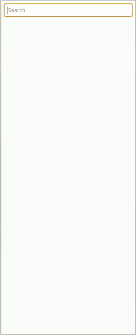

Go Package Searching
Instant searching of the packages in GOROOT/src/pkg and GOPATH.
Gopkgsearch requires that the Go source code is available on the machine and that the GOROOT environment variable has been set. See http://golang.org/doc/install/source#environment
Gopkgsearch can be fetched using 'go get':
go get github.com/PaulSamways/gopkgsearch
Starting Gopkgsearch without any parameters will cause the Go source files to be indexed and a web server to be started on port 8000. If you want to have your GOPATH directories indexed as well then the -useGoPath option can be used.
./gopkgsearch [-useGoPath=true]
Once Gopkgsearch has been started, open a web browser to localhost:8000 and start searching.